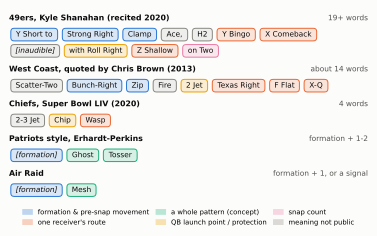
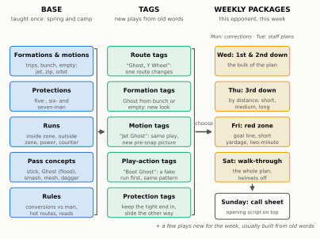
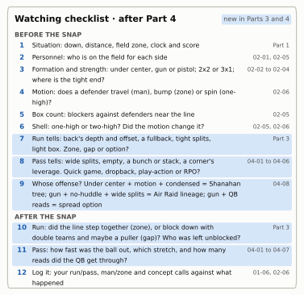

Show the Python (shared drawing helpers for this chapter)
import osimport loggingimport textwrapimport numpy as npimport pandas as pdimport matplotlib.pyplot as pltfrom matplotlib.patches import FancyBboxPatch, FancyArrowPatch, Rectangle, Patchfrom matplotlib.lines import Line2Dfrom gridiron import Play, Player, routes as r, stylelogging.getLogger("matplotlib.font_manager").setLevel(logging.ERROR)style.apply()PDF = os.environ.get("RTG_FORMAT", "").lower() in ("pdf", "typst", "print")READ_GREEN ="#0f7a55"LINE_D, OFF_BALL, GUN, UC =-0.7, -1.5, -5.0, -1.9OL = ("LT", "LG", "C", "RG", "RT")# ---------------------------------------------------------------- playersdef O(key, pos, d, w, label=None):return Player(key, pos, "off", d, w, label=key if label isNoneelse label)def D(key, pos, d, w, label):return Player(key, pos, "def", d, w, label=label)def line5():"""The five offensive linemen, 1.6 yards apart (only the center is lettered)."""return [O(k, k, LINE_D, w, "C"if k =="C"else"") for k, w in (("LT", -3.2), ("LG", -1.6), ("C", 0.0), ("RG", 1.6), ("RT", 3.2))]def trips_right():"""Gun Trips Right, 11 personnel: X alone on the left (on the line); the tight end Y attached on the right (on the line); H and Z a step off the ball. Seven on the line."""return line5() + [O("QB", "QB", GUN, 0.0, "Q"), O("RB", "RB", GUN, -1.6, "R"), O("X", "WR", LINE_D, -15.0), O("Y", "TE", LINE_D, 4.8), O("H", "WR", OFF_BALL, 10.0), O("Z", "WR", OFF_BALL, 17.0)]def set_line(p, depth=1.2):for k in OL: p.block(k, pts=[(-depth, 0.0)])# ---------------------------------------------------------------- drawing helpersdef P_(fld, p, d, w):returntuple(float(v) for v in fld.xy(*p.to_abs(d, w)))def clean(ax):"""Drop the painted yard numbers (they sit where receivers stand); clip all text to the window."""for t inlist(ax.texts):if t.get_text().isdigit() and t.get_alpha() ==0.55: t.remove()else: t.set_clip_on(True)def draw(p, ax=None, **kw): fld = p.draw(ax=ax, title=False, **kw) clean(fld.ax)return flddef say(fld, p, d, w, text, color=style.INK_2, fs=7.0, ha="center", weight="normal", ec="none", style_=None): x, y = P_(fld, p, d, w) fld.ax.text(x, y, text, fontsize=fs, color=color, ha=ha, va="center", zorder=13, fontweight=weight, linespacing=1.15, style=style_ or"normal", bbox=dict(boxstyle="round,pad=0.2", fc=style.SURFACE, ec=ec, lw=0.7, alpha=0.92))def branch(fld, p, pts, color=style.OFFENSE, lw=1.4, dash=(0, (1, 1.6)), arrow=True, alpha=1.0):"""A dotted path through absolute (d, w) points: a route's other branch.""" xy = [P_(fld, p, *q) for q in pts] xs, ys =zip(*xy) fld.ax.plot(xs, ys, color=color, lw=lw, ls=dash, zorder=4.5, alpha=alpha, solid_capstyle="round")if arrow: # arrowhead on a short tail only, so the dotted line stays dotted (x0, y0), (x1, y1) = xy[-2], xy[-1] seg =float(np.hypot(x1 - x0, y1 - y0)) f =max(0.0, 1-1.2/ seg) if seg >0else0.0 fld.ax.add_patch(FancyArrowPatch((x0 + f * (x1 - x0), y0 + f * (y1 - y0)), xy[-1], arrowstyle="-|>", mutation_scale=9, color=color, lw=lw, alpha=alpha, zorder=4.5))def dashed_motion(p, key, to, head=0.5):"""Pre-snap motion to the absolute spot `to`, split so it draws dashed end to end.""" pl = p.players[key] dd, dw = to[0] - pl.d, to[1] - pl.w f =max(0.0, 1- head /float(np.hypot(dd, dw))) p.motion(key, pts=[(dd * f, dw * f), (dd, dw)])def blank(ax): ax.set_axis_off() ax.grid(False)def box(ax, x, y, w, h, text, fc=style.SURFACE, ec=style.BASELINE, lw=1.0, fs=8, bold=False, color=style.INK, sub=None, sub_fs=6.8, ha="center"): ax.add_patch(FancyBboxPatch((x - w /2, y - h /2), w, h, boxstyle="round,pad=0.02,rounding_size=1.0", fc=fc, ec=ec, lw=lw, zorder=3)) tx = x if ha =="center"else x - w /2+1.2if sub: ax.text(tx, y + h /2-2.0, text, ha=ha, va="top", fontsize=fs, color=color, fontweight="bold"if bold else"normal", zorder=4) ax.text(tx, y + h /2-2.0- fs *0.42, sub, ha=ha, va="top", fontsize=sub_fs, color=style.INK_2, zorder=4, linespacing=1.3)else: ax.text(tx, y, text, ha=ha, va="center", fontsize=fs, color=color, fontweight="bold"if bold else"normal", zorder=4, linespacing=1.2)def arrow(ax, p0, p1, color=style.INK_2, lw=1.3, rad=0.0, ls="-"): ax.add_patch(FancyArrowPatch(p0, p1, arrowstyle="-|>", mutation_scale=11, color=color, lw=lw, ls=ls, shrinkA=2, shrinkB=2, connectionstyle=f"arc3,rad={rad}", zorder=2))
Picture two broadcasts. On one, a microphone catches a 49ers play call coming in, something like the one Kyle Shanahan once recited for reporters: “Y Short to Strong Right Clamp Ace, H2 Y Bingo X Comeback… with Roll Right Z Shallow on Two.” On a replay from the Tom Brady years, the New England quarterback walks to the line without a huddle, points at a linebacker and shouts what sounds like a single word. Both offenses are about to run a pass play with three or four receivers working together, and both will probably gain about the same yardage. So why does one coach need twenty words and the other one? The answer isn’t style. Each offense speaks a language built to solve a particular problem: how to teach a playbook to fifty-odd players, how fast to get the call to the field, and how easily to change one piece of a play in the middle of a game.
You met three of these languages in a paragraph in What a Play Really Is: the long West Coast call, the Erhardt-Perkins concept word “Ghost,” and Air Coryell’s “896.” This chapter puts all seven families side by side, explains what each one buys and costs, shows how a system is taught, and shows how you can tell, from your couch, whose offense you’re watching.
You’ll be able to…
Hear a play call and say what its words stand for (a route number, each player’s job, a whole concept, or a read), and use that to narrow down which family it comes from.
Explain what each way of naming plays buys and costs for installation (how fast players learn it), tempo (how fast the call reaches the field) and in-game adjustment (how easily the coach can change one piece).
Describe how a system is installed in layers: base plays in camp, tags that make new plays out of old words, and the weekly packages chosen for one opponent.
Read the film and data fingerprints (under-center rate, motion, empty sets, no-huddle, RPOs, quarterback runs) that separate the Shanahan tree, the Air Raid lineage and the spread option, and say why Erhardt-Perkins, Reid and Coryell offenses are harder to spot.
Run the watching checklist as it stands after Part 4, with the run, pass and system clues added.
NoteYou’ll need
The quarterback’s process from Quarterback Play: the progression (which receiver he looks at first, second, third), and the idea that a play is designed around what he can see and read in about three seconds.
How a call is built from What a Play Really Is: formation, motion, protection, concept, tags, and the radio that cuts off at 15 seconds.
The route tree and option routes from Passing Fundamentals: 1 flat, 2 slant, 3 comeback, 4 curl, 5 out, 6 dig, 7 corner, 8 post, 9 go (odd numbers break toward the sideline, even toward the middle), and routes that change after the snap.
Pass concepts from Dropback Concepts: routes that work as a unit (flood, smash, mesh, Y-cross, four verticals), and tags that change one route.
What an offensive system is
When a broadcaster says a team “runs the West Coast offense,” he means an offensive system: the offense’s whole way of operating, not one play or formation. A system has four layers:
A language. The words for formations, motions, protections, runs and pass routes, and the grammar that strings them into a play call. This is the team’s verbiage.
A core menu. The handful of runs and the couple of dozen pass concepts the offense is built on, the plays it will still be running in December.
Rules. How each play adjusts to what the defense does: which blocker takes which rusher, which routes become other routes against man coverage, whom the quarterback reads.
A teaching method. The order in which all of this is installed, how it’s drilled, and what the players are tested on.
Why a system rather than a big list of plays? An NFL offense runs about 60 plays a game (60.6 runs and passes per team per game in 2025),1 with forty seconds between them, fifteen of which the coach can’t use. A few hundred unrelated plays would be impossible to learn and to call quickly. A system turns the list into a language: a small vocabulary that combines into many plays, so a player learns words once and the coach builds new sentences every week.
ImportantWhy it exists
A system is how a coach makes a large playbook small. Players don’t memorize three hundred plays; they memorize perhaps a hundred words and a grammar, and the plays fall out of the combinations. The price is that the language has to be learned before anything else works, and a team that changes systems pays that price again.
In Madden, a playbook is a menu: “Gun Trips TE — Flood” is a card you select, and if you want a different play you scroll to a different card. A real playbook is closer to a grammar book. The name is the instruction: each word tells some of the eleven players what to do, so a coach can say a play nobody has ever run (“Flood, but the tight end runs a wheel instead of the flat”) and every player knows his job without a new diagram. That’s why real play calls sound like gibberish on the sideline mic: you’re hearing a sentence in a language you haven’t learned yet.
Three ways to say the same play
The clearest way to see what a language does is to say one play three ways. Here is a classic three-receiver pattern to the right side of a trips formation: the outside receiver runs straight up the field, the middle receiver runs about eight yards and breaks flat toward the sideline, and the innermost receiver runs straight to the flat. It’s the three-level stretch that Dropback Concepts calls flood: a deep defender has to stay with the vertical route, and the defender under him can’t cover both the out and the flat. (The flood drawn there used a deeper, 13-yard sail route in the middle; this version, with an 8-yard out, is the one Erhardt-Perkins teams call “Ghost.”) On the left, the lone receiver runs a dig across the middle on the backside.
Figure 27.1: One play, three languages: nothing on the field changes from row to row, only what each word stands for. Top: the routes from Gun Trips Right, with the five linemen and the back blocking (‘60’ stands for the protection in all three calls). Bottom: what each family says, and which receiver hears which word, column by column under the players. Air Coryell gives X, Y and Z a route-tree number each, in that fixed order, and names H’s route separately. The West Coast style names every receiver’s route (real West Coast calls often add a pattern word and name the protection their own way, such as ‘2 Jet’; the receiver-by-receiver part is what marks the family). Erhardt-Perkins says one word, ‘Ghost’, for the whole three-man pattern and leaves the backside to a rule or a second word. The calls are illustrative, written in each family’s style rather than quoted from a playbook.
The same four receivers run the same four routes in every row. What changes is what a word stands for, and that one design decision ripples through everything else.
Air Coryell: a number for every route
Air Coryell is named after Don Coryell, whose San Diego Chargers of 1978–1986 threw the ball downfield more aggressively than anyone of their era (the Chargers led the NFL in passing yards six seasons running, 1978–1983).2 Coryell, a former San Diego State coach who believed a defense should have to cover every blade of grass, wanted any combination of routes callable in a breath. His language’s core is the digit system: each pass-catcher’s route is its number in the route tree from Passing Fundamentals, and the call lists the numbers in a fixed order. In the classic version the order is the split end (X), the tight end (Y) and the flanker (Z), so “896” sends X on an 8 (a post), Y on a 9 (a go up the seam) and Z on a 6 (a dig).3
Why three digits, and why those three letters? Because the system grew up with the formations of its day: two backs, two wide receivers and a tight end. X, Y and Z were the only receivers who weren’t backs, so three digits covered every one of them, and backs got their routes by name (“F Swing”). One digit per man is enough because the tree is built so that a number says both depth and direction: odd numbers break toward the sideline, even numbers toward the middle, and the numbers grow with depth. In our figure, “619” means X runs the dig (6), Y the flat (1), Z the go (9), and the slot, H, who doesn’t exist in the three-digit grammar, gets his route by name: “H Out.”
What it buys. Huge reach from a tiny vocabulary: with ten route numbers and three receivers, the language can express a thousand route combinations without a new word, and a play-caller can invent a pattern on the sideline by saying three digits. The numbers also travel well: “a 9 route” means a go almost everywhere.
What it costs. The digits describe routes, not how routes work together. Nothing in “619” says that the Y, H and Z routes form a flood, or whom the quarterback reads; that is taught separately. Chris Brown, whose essays on play-calling languages are the standard reference, put it sharply: the route tree gives coaches “flexibility where they don’t need it and not enough where they do.”4 Most of the thousand combinations are bad plays, and because the digits tie a route to a letter, moving the 9 to a different player means moving players or adding words.
That is why pure Coryell calls are rare in today’s NFL. Once offenses lived in three- and four-receiver sets, the fourth and fifth receivers fell outside the digits and every call sprouted name tags; and the concept languages below solved the reads problem the digits never did. The lineage ran through Coryell’s assistants and theirs (Joe Gibbs, Ernie Zampese, Norv Turner, Mike Martz): Brown names Turner’s Troy Aikman-era Cowboys as a Coryell offense, and Martz learned the three-digit system from Zampese before his 1999–2001 St. Louis Rams, “the Greatest Show on Turf,” became its most famous later showcase.5 The numbers survive everywhere else: in route trees, in coaches’ shorthand (“run a 7”), and in many hybrid playbooks.
West Coast: say what every player does
The West Coast offense (WCO) is the family descended from Bill Walsh’s San Francisco 49ers (1979–1988), whose timed short passing game you met in Passing Fundamentals. Its descendants are the largest family tree in football: Walsh’s assistants (Mike Holmgren, George Seifert, Dennis Green, among others), the next generation (Andy Reid and Jon Gruden under Holmgren; Mike Shanahan, Seifert’s offensive coordinator), and theirs (Gary Kubiak, Kyle Shanahan, Sean McVay, Matt LaFleur…).6 (The name itself is an accident: it was first used for the vertical Coryell offense out of San Diego, and only later stuck to Walsh’s; the story is in the 49ers case study.)
As a language, the West Coast style is explicit. A call names the formation, any shift or motion, the protection, usually a word for the base pattern, and then a route word for each receiver whose job the coach wants to spell out. Jon Gruden, a Holmgren-tree coach, made one such call famous on television: “Spider 2 Y Banana.” Its grammar is pure West Coast: a formation-and-protection piece (“Spider 2”), then a lettered receiver and his route (“Y Banana”). And Gruden’s favourite line about it, “the fullback in the flat is the primary receiver,” shows what the call leaves to the base pattern: the fullback’s route is never said aloud.7 Shanahan’s 49ers still call it.
What it buys. Precision. Every player hears his own job, so there’s little room for a misunderstanding, and the play-caller can change exactly one piece (“same play, but X Comeback”) without inventing a new name.
What it costs. Time and memory. At a brisk three words a second, a twenty-word call takes about seven seconds to say; the quarterback hears it over the radio and then has to say it all again in the huddle, inside the 25 seconds left after the radio cuts off. That makes fast tempo hard, and a rookie has to learn hundreds of words before he can play. Brown quoted one real call, “Scatter-Two Bunch-Right-Zip-Fire 2 Jet Texas Right-F Flat X-Q,” as an example of how these calls had “morphed into monstrosities.” His other complaint is that “plays that are conceptually the same can have wildly different calls,” because the same pattern, run from a different formation by different letters, is spelled with different words.8
CautionCommon misconception
“A West Coast team throws short passes.” It did in 1981. Today the label mostly tells you about language and lineage: which coaches taught this staff, and which words they use. Kyle Shanahan’s 49ers and Sean McVay’s Rams are West Coast descendants by language, but their offenses are built on the wide-zone run and play-action (Zone Running; Play-Action, Bootlegs, and Screens); Andy Reid’s Chiefs are West Coast descendants that also run college spread concepts and RPOs. When you hear “West Coast,” think “family tree,” not “short passing.”
Erhardt-Perkins: one word for the whole pattern
Erhardt-Perkins is named after two assistants on Chuck Fairbanks’s New England Patriots staff of the 1970s, Ron Erhardt and Ray Perkins, who built a language around concepts rather than routes.9 Perkins became the Giants’ head coach and in 1982 hired Erhardt as his offensive coordinator; when Bill Parcells replaced Perkins the next year he kept Erhardt and the language, and it passed through Parcells’s staff to Bill Belichick, whose Patriots ran it with Tom Brady for two decades.10 In Erhardt-Perkins, one word names the whole pattern. In Brown’s account, “Ghost” has “the outermost receiver, whoever it is, run a vertical route, one inside receiver run to a depth of roughly eight yards before breaking flat to the outside, and the innermost receiver run immediately to the flat”: exactly our play.11 “Tosser” means double slants. Because each word covers one side of the formation, a call can be two words, “Ghost-Tosser,” one concept to each side.
This is concept-based terminology: a language in which a word names a pass concept instead of a route. Erhardt-Perkins is its best-known form, and today almost every NFL playbook uses concept words for at least part of the passing game. The trick that makes it work is that the jobs are assigned by position in the formation, not by letter. “Outermost,” “inside,” “innermost” are counted from the sideline in, the #1, #2, #3 numbering from Spread and Modern Formations. So Ghost doesn’t care who lines up where.
Figure 27.2: The same word from three formations. In each panel ‘Ghost’ means #1 (the outermost receiver) runs the vertical, #2 the eight-yard out and #3 (the innermost) the flat, counted from the sideline in. Left: trips with the tight end attached, as before. Middle: a tight bunch. The routes cross on purpose: #1 releases outside and bends toward the numbers to carry the cornerback, #2’s out breaks underneath him, and #3 flattens under both, so defenders who try to follow their man run into traffic. Right: an empty formation (no back behind the quarterback), where the running back has split out and runs the flat. Only the three-receiver side is drawn. Three formations and different players, but nobody has to learn a new play.
Charlie Weis, Belichick’s offensive coordinator for Brady’s first three Super Bowl wins, explained the payoff in Brown’s piece: “You can cut down on the plays and get different looks from your formations and who’s in them. It’s easier for the players to learn.”12 A receiver learns Ghost once, as a set of three jobs, and he can be any of the three. The coach can put his best receiver at #2 one week and #1 the next, and the call doesn’t change.
What it buys. Short calls, which is why New England could run a no-huddle offense with one- and two-word calls when it wanted to. Easy learning. And flexibility of personnel: the same concept from 11, 12 or 21 personnel, from trips, bunch or empty, so a defense can’t key on the formation.
What it costs. Expressiveness. If the coach wants #3 to run a wheel instead of the flat, he needs a tag (“Ghost, Y Wheel”) or a new word, and every new word has to be taught. What a West Coast call spells out (who blocks, who is hot) has to be settled by rules before the game, so the system leans on smart, experienced players, one reason the Patriots prized players who could learn many positions.
Most playbooks are hybrids. The call from What a Play Really Is, “Gun Trips Right Zip 60 Stick X Dig,” already mixed a concept word (“Stick”) with a West Coast route word (“X Dig”). The families still matter, because they tell you what a staff reaches for first: to spell out jobs, to name concepts, or to number routes.
Long calls on purpose: the Shanahan and McVay dialect
If concept words are so efficient, why do the most copied offenses of the last decade, Kyle Shanahan’s and Sean McVay’s, use some of the longest calls in football? Here is the call from the start of the chapter, which Shanahan recited in 2020 when asked for one of his longest,13 beside Brown’s West Coast example and some shorter calls.
Show the Python
CATS = {"form": ("formation & pre-snap movement", style.SERIES[0]),"route": ("one receiver's route", style.SERIES[1]),"concept": ("a whole pattern (concept)", style.SERIES[2]),"qb": ("QB launch point / protection", style.SERIES[3]),"snap": ("snap count", style.SERIES[4]),"unk": ("meaning not public", style.MUTED),}CALLS = [ ("49ers, Kyle Shanahan (recited 2020)", "19+ words", [("Y Short to", "form"), ("Strong Right", "form"), ("Clamp", "form"), ("Ace,", "unk"), ("H2", "unk"), ("Y Bingo", "route"), ("X Comeback", "route"), ("[inaudible]", "unk"), ("with Roll Right", "qb"), ("Z Shallow", "route"), ("on Two", "snap")]), ("West Coast, quoted by Chris Brown (2013)", "about 14 words", [("Scatter-Two", "unk"), ("Bunch-Right", "form"), ("Zip", "form"), ("Fire", "unk"), ("2 Jet", "qb"), ("Texas Right", "route"), ("F Flat", "route"), ("X-Q", "route")]), ("Chiefs, Super Bowl LIV (2020)", "4 words", [("2-3 Jet", "unk"), ("Chip", "qb"), ("Wasp", "route")]), ("Patriots style, Erhardt-Perkins", "formation + 1-2", [("[formation]", "form"), ("Ghost", "concept"), ("Tosser", "concept")]), ("Air Raid", "formation + 1, or a signal", [("[formation]", "form"), ("Mesh", "concept")]),]fig, ax = plt.subplots(figsize=(6.5, 3.95))blank(ax)ax.set_xlim(0, 100)ax.set_ylim(5, 64)fig.canvas.draw()REND = fig.canvas.get_renderer()INV = ax.transData.inverted()GAP, PAD =1.3, 1.4def text_w(text):"""Measured width of a chip's text in data units (so chips never overlap).""" t = ax.text(0, 0, text, fontsize=7.4, style="italic"if text.startswith("[") else"normal") bb = t.get_window_extent(renderer=REND) t.remove() (x0, _), (x1, _) = INV.transform([(bb.x0, bb.y0), (bb.x1, bb.y0)])return x1 - x0def chip(x, y, text, cat): lab, c = CATS[cat] w = text_w(text) +2* PAD ax.add_patch(FancyBboxPatch((x, y -1.7), w, 3.4, boxstyle="round,pad=0,rounding_size=0.9", fc=c, alpha=0.17if cat !="unk"else0.12, ec="none", zorder=2)) ax.add_patch(FancyBboxPatch((x, y -1.7), w, 3.4, boxstyle="round,pad=0,rounding_size=0.9", fc="none", ec=c, lw=1.0, zorder=3)) ax.text(x + w /2, y, text, ha="center", va="center", fontsize=7.4, color=style.INK, zorder=4, style="italic"if text.startswith("[") else"normal")return wy =61.0for name, count, words in CALLS: ax.text(0.5, y, name, fontsize=7.8, fontweight="bold", color=style.INK, va="center") ax.text(99.5, y, count, fontsize=7.4, color=style.INK_2, va="center", ha="right") y -=4.4 x =1.0for text, cat in words: w = text_w(text) +2* PADif x + w >99.5: y -=4.4 x =1.0 x += chip(x, y, text, cat) + GAP y -=5.0handles = [Patch(fc=c, alpha=0.3, ec=c, label=lab) for lab, c in CATS.values()]ax.legend(handles=handles, loc="lower center", bbox_to_anchor=(0.5, -0.03), ncol=3, fontsize=6.8, frameon=False, handlelength=1.4, columnspacing=1.0)plt.show()

Figure 27.3: How long is a play call? Each chip is one word or tight group of words, coloured by its job; grey means the team or source hasn’t said what the word means. Shanahan’s call (2020, as he recited it; one word was inaudible) spells out the formation, the shift, three receivers’ routes, the quarterback’s launch point and the snap count. Brown’s West Coast example is read here in this course’s words (zip motion, the ‘Texas’ angle route, ‘2 Jet’ as a protection); Brown didn’t decode it, so these are interpretations. The Chiefs’ Super Bowl LIV call is four words: ‘Wasp’ is the route, and ‘Chip’ is read as the usual word for a back’s chip block. Erhardt-Perkins and Air Raid calls are a formation plus one or two concept words, and Air Raid teams often replace even those with a hand signal. The readings of the Shanahan words follow a 2025 breakdown of the 49ers’ call order and are interpretations, not the team’s definitions.
Shanahan’s call follows the order most West Coast staffs use: first any shift or motion and the formation (“Y Short to Strong Right”: “Y Short” is one of the tight end’s motions, and the formation’s strength goes to the right), then a formation variation (“Clamp,” which by one 2025 breakdown puts the tight end just off the tackle’s hip), then the run or protection piece, then the pass concept and the receivers’ routes (“Y Bingo X Comeback… Z Shallow”), a launch point for the quarterback (“Roll Right,” which in West Coast usage normally means he rolls out to his right, so the line knows which way to slide), and finally the snap count (“on Two”).14 As recited, the call has no word that is obviously the protection; “Ace” or “H2” may fill that slot, but the 49ers have never published their dictionary, so these readings are informed guesses. The same breakdown lists one more optional slot, a second play: a kill call from The Pre-Snap Phase, which lets the quarterback choose between two plays at the line.
Why keep calls that long? Three reasons, and each says something about how these offenses think.
First, the call makes every play look like every other play. In the Shanahan offense a run, the play-action pass off it and the bootleg off that should look identical for the first second. The call is built the same way: the first half of the sentence (formation, motion, the run’s blocking) is shared, and only the last words differ. Case Study: The Shanahan Tree calls the result “the illusion of complexity.”
Second, spelling out every job removes doubt. With exact landmarks, timing and blocking asked of every receiver, nobody has to translate a concept into his own assignment under the play clock.
Third, the coach wants the call spoken, not read. Shanahan was notably cool on wristbands, at least early in his 49ers tenure, because he wanted the quarterback to say the whole call aloud in the huddle and the players to hear it.15 The cost is tempo: the 49ers went without a huddle on under 3% of their neutral-situation snaps in 2025 (25th in the league; see the fingerprint chart below).
McVay’s version adds a twist on the 15-second radio cutoff. The Rams often huddle quickly and get to the line with time left on the radio, so McVay can look at the defense’s alignment and talk to his quarterback until the cutoff. In 2017 Jared Goff described it: “Sometimes he talks all the way up until 15 seconds, sometimes he talks for five seconds, sometimes he talks for 10 seconds — it all varies.”16 The long call in the huddle sets the play; the last words before the cutoff fine-tune it. That mix of quick huddles and the occasional true no-huddle is why the 2025 Rams, at about 6% no-huddle, sat close to the league’s norm (5%), unlike the 49ers.
NoteFilm room: Kansas City Chiefs, Super Bowl LIV (February 2, 2020)
Andy Reid’s Chiefs are a West Coast family that took in everything from college spread concepts to shovel passes, and their language shows it: long, receiver-specific calls with names chosen to stick in the memory. The most famous came midway through the fourth quarter of Super Bowl LIV, trailing San Francisco 20–10 and facing third-and-15. The call was “2-3 Jet Chip Wasp,” and Patrick Mahomes had asked for it. Tyreek Hill, aligned with Travis Kelce and Sammy Watkins on the same side, ran a deep route that started like a deep crosser toward the middle, then cut sharply back toward the sideline (picture a deep dig, the 6, that turns into a corner, the 7). Pressured, Mahomes drifted about 14 yards behind the line, which is why the ball travelled about 57 yards in the air for a 44-yard gain. Kansas City scored three touchdowns in the last seven minutes and won 31–20. Reid’s explanation of the name afterwards: “We call it ‘Wasp.’ Literally put the stinger on ’em.”17
What to notice: “Wasp” is one receiver’s route, named for what it does, inside a West Coast-style sentence, and the quarterback could ask for it by name on the sideline. The rest of the call is only partly readable from outside. “Chip” is very probably the word you know from Pass Protection: a back hits the edge rusher before releasing, extra time for a long-developing route. “2-3 Jet” the Chiefs haven’t explained; in many West Coast playbooks a number plus “Jet” names a protection, a different word from the jet motion of Motion and Shifts.
The run-and-shoot: let the routes decide
The run-and-shoot solves the naming problem from the opposite direction. Instead of a long call that specifies everything, it calls a handful of plays and lets the receivers and quarterback decide the routes after the snap, from what the coverage does. The idea began with an Ohio high-school coach, Glenn “Tiger” Ellison, in 1958, and was turned into a passing offense by Darrel “Mouse” Davis, as Portland State’s head coach (1975–1980) and then as offensive coordinator of the Houston Gamblers of the USFL (a spring professional league, 1983–1985), where Jim Kelly threw for 5,219 yards in 1984. Davis’s college quarterback, June Jones, became its other great teacher. In the NFL it was the base offense of the Detroit Lions, the Houston Oilers and the Atlanta Falcons for stretches between the late 1980s and the mid-1990s.18
The base formation has four wide receivers and one back, and no tight end: two receivers wide and two slot receivers just outside the tackles, off the ball. The quarterback usually rolls or sprints toward one side rather than dropping straight back, and a receiver often goes in motion before the snap, partly to read man or zone by whether a defender follows him (the trick from Motion and Shifts as Weapons).19 The plays have one-word names (Davis and Jones’s own teaching material leads with ones called Go, Choice, Streak and Dog), and each is less a set of routes than a set of reads: “go deep if you can beat him, hook up if you can’t”; “split the two deep safeties, or break away from the underneath defender if there’s only one.” The quarterback reads the same safeties his receivers do, which is the whole idea, and the whole risk.
Figure 27.4: The run-and-shoot’s base: four receivers (X and Z wide, H and Y in the slots off the ball; with no tight end on the field, Y is a slot receiver), one back, and routes that are decided after the snap. Both panels show one illustrative call built on the run-and-shoot’s reads (not a reconstruction of Go, Choice, Streak or Dog). The quarterback half-rolls toward the right, and the back leads him to block the edge on that side. Left, against one deep safety: the middle of the field is closed, so the slots break off at about seven yards, each away from the defender over him (H outside, because the safety is inside him; Y inside, because the nickel back is outside him), and the wide receivers, unable to run past cornerbacks who are backing up, hook up at about twelve. Right, against two deep safeties: the middle is open, so the slots run up the seams between and past the safeties, and the wide receivers run past cornerbacks who are sitting low. Dotted grey lines are the branch each receiver would have run against the other look.
What it buys. A tiny playbook that is nearly impossible to defend by guessing: if the defense plays two deep, the routes become a vertical attack; if it plays one deep, they become a short attack underneath. Calls are short, installation is mostly teaching reads rather than plays, and the offense can play fast. Its most durable gift to modern football is the option route (often called a choice route, the run-and-shoot’s own word), which every NFL offense now uses somewhere.
What it costs. Everything rides on the quarterback and receiver reading the coverage the same way at full speed; when they don’t, the ball goes to a spot nobody is running to, and the run-and-shoot’s reputation for interceptions followed it everywhere. With no tight end it has fewer blockers against the run and the blitz, which early-1990s NFL defenses attacked. No NFL team runs the pure version today; almost every team runs pieces of it.
NoteFilm room: Houston Oilers 1990–1991
The run-and-shoot’s best NFL seasons came from Warren Moon’s Oilers under head coach Jack Pardee. Moon led the NFL in passing yards in both 1990 (4,689) and 1991 (4,690).20 What to notice on old Oilers film: four wide receivers and no tight end on almost every snap, a quarterback who often rolls rather than drops, and slot receivers whose routes look different from snap to snap against different coverages, even when the call was the same.
The Air Raid: a few plays, a thousand reps
The Air Raid took a different lesson from the same problem. You met its founders, Hal Mumme and Mike Leach, and its signature concepts, mesh, Y-cross and four verticals, in Dropback Concepts.21 What matters here is that its language is even smaller than its menu. An AP history of the offense summed up the hallmarks as “one-word play calls, hand signals that take just a finger or two and a slim playbook.”22
The naming is a statement about practice. If the whole passing game is a dozen concepts, the team can rep each of them hundreds of times a season against every coverage, and the quarterback and receivers learn to read each one the same way without thinking. Leach guarded that: “If we adopt a new play, I’ve always tried to cut one that we have so we can control the package, practice and execute it, because execution is the most important.”23 Variety comes from the window dressing (formations, motions, who lines up where), never from new words.
What it buys. Speed and mastery. One-word calls and finger signals make a no-huddle offense easy; a small menu means more practice reps per play than any other system; and players learn the whole offense quickly, which suited college rosters that turn over every year.
What it costs. Range, and secrecy. A defense knows what’s coming in a general sense; the Air Raid’s answer is that it doesn’t matter if you run it well enough, which is a bet on execution. Signals can be stolen, so no-huddle teams disguise them, with dummy signals and several signallers of whom only one is live (What a Play Really Is). And the pure version had little in the way of a power run game or under-center play-action, the things an NFL offense leans on in bad weather and short yardage.
The Air Raid reached the NFL through people rather than as a system. Kliff Kingsbury, Leach’s quarterback at Texas Tech and later Patrick Mahomes’s coach there, brought the language and the no-huddle to Arizona (head coach, 2019–2022) and Washington (offensive coordinator, 2024–2025); Lincoln Riley, another Leach product, coached three first overall picks: Baker Mayfield, Kyler Murray and Caleb Williams.24
NoteFilm room: Washington Commanders 2024–2025
Under Kingsbury, Washington went without a huddle on 63% of its neutral-situation snaps in 2025, more than ten times the rate of the median NFL team (see the fingerprint chart below); in 2024, Jayden Daniels’s rookie year, it was higher still. That’s the Air Raid’s language at work in the NFL: short calls that can be signalled, and a quarterback who gets to the line, looks, and confirms the call while the radio is still on. Washington was also the NFL’s least under-center offense in 2025, again an Air Raid habit. Only one team gave a bigger share of its runs to the quarterback by design, but that isn’t an Air Raid habit at all; it’s what you do with running quarterbacks, and Washington started two, Daniels and Marcus Mariota.
What to notice: with no huddle, the call comes in by radio and by signals at the line, and the offense often stands set for a long look before the snap. The no-huddle is buying information, not just speed (the point made in What a Play Really Is).
The spread option: naming the read
One family names its plays by the read at their heart. In the spread option that grew up in college football in the 2000s (The College Laboratory), a call names a run scheme and the defender the quarterback will read, and often a pass attached to it. The zone read from Option Football is the archetype: the line blocks inside zone, one defender is left unblocked on purpose, and the quarterback hands off or keeps depending on what that defender does. Add a receiver’s route that the quarterback can throw instead, and the call is an RPO (Run-Pass Options). An illustrative call in this style sounds like “Trips Right, Zone Read, Bubble”: a formation, a run with its read built in, and a quick pass to attach. You can tell it from an Air Raid one-word call because the words name a run and a read, not a pass concept.
As a language, this family looks like Erhardt-Perkins applied to the run game: short words, each a whole package, built to be signalled from the sideline. The NFL descendants are offenses with a running quarterback: Baltimore’s option run game with Lamar Jackson (2019–2025, the subject of the Ravens case study) and Philadelphia’s quarterback-run offense with Jalen Hurts, which led the NFL in RPO rate in 2022 (FTN charting).
What it buys. Numbers: reading a defender instead of blocking him gives the offense an extra blocker somewhere, and a call that bundles a run and a pass forces the defense to defend both on every snap. What it costs. The quarterback takes hits, and an NFL defense is fast enough to squeeze the reads; that’s why most NFL offenses use these plays as a package inside another system rather than as a whole system.
Why the language matters
Put the families side by side and the trade-offs line up along three axes: how fast players learn the system, how fast the call gets to the field, and how easily the coach can change one piece of a play once the game starts. The “sample call” column is the quickest way to tell them apart by ear.
Family
A word names…
Sample call (illustrative)
Learning
Tempo
Changing one piece
Air Coryell
a route, by number
“Trips Right 60, 619, H Out”: digits
small vocabulary; reads taught separately
moderate: short to say, but usually huddled
easy for X, Y, Z (change a digit)
West Coast (incl. Shanahan/McVay)
each player’s job
“Spider 2 Y Banana”; 10–20 words with letters and routes
many words; precise
slow; huddle
easy: swap one route word
Erhardt-Perkins
a whole pass concept
“Trips Right 60 Ghost”: formation + concept word
few words; any player, any spot
fast; no-huddle friendly
needs a tag or a new word
Run-and-shoot
a play whose routes are reads
“Go”: one word, four wide
few plays; many reads to master
fast
built in: routes adjust after the snap
Air Raid
a whole pass concept
“Mesh,” or two fingers
tiny menu, endless reps
fastest
mostly by formation, not by word
Spread option
a run scheme and its read (often with a pass)
“Zone Read, Bubble”
the reads are the curriculum
fast
built in: the read decides
By ear, a one-word pass concept could be Erhardt-Perkins or Air Raid; what separates them is everything around the word (a huddle and many formations, or no huddle and a signal), which is why the fingerprints later in the chapter matter.
Installation. The fewer words a system has, the faster a new player is useful. That’s why concept-based languages spread through college football, where a quarterback might start for only two or three years. They suit NFL veterans for a related reason: a concept word like “Ghost” or “Stick” describes a picture, so a receiver who ran it in his last team’s language only has to learn the new name, not a new set of route-by-route words. A long West Coast call is the opposite bet: more to learn, but a player who has learned it can be told anything.
Tempo. A call that can be shouted in one word or shown with two fingers lets an offense play without a huddle, and the no-huddle does two things: it tires the defense, and it makes substituting dangerous. The officials hold the snap so the defense can match only when the offense changes players; if the offense keeps the same eleven and snaps quickly, a defense that tries to swap risks being caught with twelve men on the field or mid-change. Long calls usually need the huddle, or a wristband that turns a long call into a number. The tempo game, including the in-between sugar huddle, is in In-Game Adjustments and Tempo.
In-game adjustment. The defense is jumping the out, so run the out-and-up. A route-by-route language makes that fix trivial to call; a concept language needs it to exist in advance as a practised tag; a read-based language (run-and-shoot, spread option) builds many fixes into the play. And every modern language lets the quarterback change the play at the line, with a kill call or a check-with-me system (The Pre-Snap Phase). Each is a different answer to the same question: who adjusts, and when?
Runs and protections have dialects too, though the run game’s are the mildest: a hole-numbered “26 Power” or a scheme word like “wide zone” is understood almost anywhere, while protection names (number series like “60,” word calls like “2 Jet”) vary sharply from staff to staff. Defenses have their own languages as well, a front word, a coverage word and a pressure word, which Parts 5 to 7 build.
Whose language? The play-caller’s
A language takes a season or more to learn, so a team doesn’t want to change it every time a coordinator leaves. When the head coach is an offensive coach who calls plays (Shanahan, McVay, Reid), the team speaks his language and new coordinators learn it. When the head coach is a defensive coach, the language usually comes with the offensive coordinator: the 2025 Patriots’ offense spoke the Erhardt-Perkins of Josh McDaniels, who learned it under Belichick, not the language of their head coach, Mike Vrabel, a defensive coach. That arrangement is fragile. When such a coordinator leaves, the team either relearns everything under a new one or hires from the same tree so the words survive, and the NFL churns coordinators constantly: Philadelphia began 2026 with its fifth different offensive coordinator in five seasons, and Detroit with its third in three.25 What travels with a coach is his language, which is why coaching trees (Appendix E; coaching tree) are also family trees of vocabulary.
Here is where to watch each family in 2026, by who calls the plays:
Family
Where to watch it in 2026
Shanahan/McVay tree
49ers (Kyle Shanahan), Rams (Sean McVay), Packers (Matt LaFleur, who coached under both), Vikings (Kevin O’Connell, McVay’s coordinator in 2020–2021)
Reid’s West Coast
Chiefs (Andy Reid; Eric Bieniemy back as coordinator)
Erhardt-Perkins
Patriots (McDaniels, still coordinator under Vrabel)
Air Raid lineage
No obvious play-caller: Kingsbury left Washington to join the Rams’ staff as assistant head coach. Watch whether the Commanders’ no-huddle outlives him.
Spread option
Ravens and Eagles, both under new coordinators (Declan Doyle, Sean Mannion): a test of whether the package belongs to the coach or to the quarterback
Air Coryell
No pure version; listen for the digits in route talk
The table is a starting point, not a verdict: staffs blend, and the 2026 play-calling arrangements come from hiring reports.26
Installing a system: base, tags, weekly packages
How does a system get from a coach’s head into fifty-three players? In layers, from the general to the specific, and the layers are why a team can show a defense “new” plays every week without anyone learning anything new.
Show the Python
fig, ax = plt.subplots(figsize=(6.5, 5.2))blank(ax)ax.set_xlim(0, 100)ax.set_ylim(0, 74)B, T, W = style.OFFENSE_TINT, "#e3f2ea", "#f3ead2"ax.text(16, 72.0, "BASE", fontsize=9, fontweight="bold", color=style.INK, ha="center")ax.text(16, 69.1, "taught once: spring and camp", fontsize=6.8, color=style.INK_2, ha="center")ax.text(50, 72.0, "TAGS", fontsize=9, fontweight="bold", color=style.INK, ha="center")ax.text(50, 69.1, "new plays from old words", fontsize=6.8, color=style.INK_2, ha="center")ax.text(86, 72.0, "WEEKLY PACKAGES", fontsize=9, fontweight="bold", color=style.INK, ha="center")ax.text(86, 69.1, "this opponent, this week", fontsize=6.8, color=style.INK_2, ha="center")base = [("Formations & motions", "trips, bunch, empty;\njet, zip, orbit"), ("Protections", "five-, six- and\nseven-man"), ("Runs", "inside zone, outside\nzone, power, counter"), ("Pass concepts", "stick, Ghost (flood),\nsmash, mesh, dagger"), ("Rules", "conversions vs man,\nhot routes, reads")]for i, (t, s) inenumerate(base): box(ax, 16, 56- i *11.5, 29, 9.6, t, fc=B, ec=style.OFFENSE, bold=True, fs=7.6, sub=s, sub_fs=6.4)tags = [("Route tags", "\u201cGhost, Y Wheel\u201d:\none route changes"), ("Formation tags", "Ghost from bunch or\nempty: new look"), ("Motion tags", "\u201cJet Ghost\u201d: same play,\nnew pre-snap picture"), ("Play-action tags", "\u201cBoot Ghost\u201d: a fake\nrun first, same pattern"), ("Protection tags", "keep the tight end in,\nslide the other way")]for i, (t, s) inenumerate(tags): box(ax, 50, 56- i *11.5, 29, 9.6, t, fc=T, ec=style.THIRD, bold=True, fs=7.6, sub=s, sub_fs=6.4)ax.text(86, 63.4, "Mon: corrections \u00b7 Tue: staff plans", fontsize=6.2, color=style.INK_2, ha="center", style="italic")week = [("Wed: 1st & 2nd down", "the bulk of the plan"), ("Thu: 3rd down", "by distance: short,\nmedium, long"), ("Fri: red zone", "goal line, short\nyardage, two-minute"), ("Sat: walk-through", "the whole plan,\nhelmets off")]for i, (t, s) inenumerate(week): box(ax, 86, 56- i *11.5, 26, 9.6, t, fc=W, ec=style.LINE_TO_GAIN, bold=True, fs=7.4, sub=s, sub_fs=6.4)box(ax, 86, 8.8, 26, 8.4, "Sunday: call sheet", fc=style.SURFACE, ec=style.INK_2, bold=True, fs=7.6, sub="opening script on top", sub_fs=6.2)arrow(ax, (86, 16.5), (86, 13.2), lw=1.2)def bracket(x, y0, y1, x_to, label=None):"""One bracket spanning a whole column, with a single arrow out of its middle.""" ax.plot([x -0.8, x, x, x -0.8], [y1, y1, y0, y0], color=style.INK_2, lw=1.1, solid_capstyle="round") ym = (y0 + y1) /2 arrow(ax, (x, ym), (x_to, ym), color=style.INK_2, lw=1.6)if label: ax.text((x + x_to) /2, ym +2.2, label, fontsize=6.4, color=style.INK_2, ha="center")bracket(31.8, 6.0, 60.0, 35.2, None)bracket(65.8, 6.0, 60.0, 72.6, "choose")ax.text(80, 1.8, "+ a few plays new for the week, usually built from old words", fontsize=6.6, color=style.INK_2, ha="center", style="italic")plt.show()

Figure 27.5: How a system is installed. The base (left) is taught once, in spring practices and training camp: the formations, motions, protections, runs and pass concepts the offense is built on. Tags (middle) can be attached to any of the base plays to make new plays out of old words, so a defense sees something new while the players run what they already know. Each week (right), after Monday’s corrections and the staff’s Tuesday planning, the coaches choose the slice of base plays and tags that fits this opponent and install it day by day, plus a few plays new for the week; the result goes on the call sheet, whose first page is often a script of the opening plays. The weekday schedule is typical, not fixed.
The base. In spring practices and camp, the staff installs the system in numbered “installs,” each a slice of formations, protections, runs and pass concepts, then goes back to the start and installs it all again. This is where the language is learned, and it is deliberately small, because everything else is built from it.
Tags. You’ve met tags twice already, as words that change one thing in a call (What a Play Really Is) and as route tags on pass concepts (Dropback Concepts). In a system they are how the playbook grows without growing its vocabulary much: each base concept gets a few tags (a route, a formation, a motion, a play-action fake), and each is practised a few times. Here are two on the play from the start of the chapter.
Figure 27.6: Two tags on one base play (faded lines are what the base play would run). Left, ‘Ghost, Y Wheel’, a route tag: the tight end (#3) starts toward the flat, then turns up the sideline past a defender who has been jumping the flat. The tag also tells #1 to convert his vertical into a post, clearing the sideline for the wheel; good tags carry built-in adjustments like this so two routes never land on one spot. Right, ‘Boot Ghost’, a play-action tag: the quarterback fakes a run to the left and rolls right toward the same pattern, run on the move (the flat settles a little deeper, about three yards, so it can be thrown on the run). The linebackers step toward the fake. The end on the boot side is unblocked (a ‘naked’ boot), so he must choose between the fake and the quarterback. And X’s dig becomes the boot’s deep crosser, all the way across behind the linebackers, as in Play-Action, Bootlegs, and Screens.
The best tags are the ones the defense is most likely to bite on. If the defense has spent the game jumping the flat route, the wheel punishes it. If the linebackers are flying toward every run fake, the boot punishes them. That’s why tags are the main tool of constraint theory: the base play works until the defense cheats against it, and the tag is the punishment for cheating.
Weekly packages. Each week the staff studies the next opponent and builds the game plan: the slice of base plays and tags expected to work against this defense, filed by situation, plus a few plays that are genuinely new for the week, usually new combinations of old words. A common rhythm is film corrections on Monday, a players’ day off on Tuesday while the coaches build the plan, first-and-second-down plays on Wednesday, third down on Thursday, red zone, goal line and the two-minute drill on Friday, and a walk-through of the whole plan on Saturday, though teams vary.27 By Sunday the plan has been boiled down to the call sheet the play-caller holds on the sideline, often topped by an opening script, a West Coast institution: Bill Walsh famously scripted his first 10–15 plays before every game.28 The staff’s whole week is in The Game Plan.
The language shapes the week: an Erhardt-Perkins team can put a concept in a new formation at almost no cost; a West Coast team can write a new route combination into a call on Wednesday; an Air Raid team adds almost nothing and chooses new window dressing. Every staff is trying to make what looks new to the defense old to its own players.
Fingerprints: recognising a system on film
You can’t hear the play calls from your couch, but every system leaves marks you can see: where the quarterback lines up, how much motion there is, whether the offense huddles, how often it empties the backfield or the quarterback runs. No single mark proves anything, but together they make a fingerprint. Here are seven 2025 offenses.
Figure 27.7: Seven 2025 offenses’ fingerprints, labelled with their 2025 play-callers. Each cell is the share of that team’s neutral-situation runs and passes (outside the last two minutes of each half, win probability 20–80%) with that feature, and its rank among the 32 teams (1st = most); the darker the cell, the higher the rank. The bottom row is the median team. ‘Motion’ counts motion before or at the snap (FTN’s definition); ‘QB designed runs’ is the share of the team’s runs carried by a quarterback (a passer with 20 or more attempts), leaving out scrambles, kneel-downs and sneaks. The Shanahan-tree teams are under center and in motion and almost never run RPOs; Washington is the reverse. One key fingerprint is missing: FTN doesn’t chart receivers’ splits, so condensed formations have to be counted by eye (see Watch for it). Sources: nflverse play-by-play and FTN charting, 2025 regular season.
Read the chart as contrasts rather than labels, and add what film shows that the data can’t. These are the family tells the rest of the chapter (the checklist and Watch for it) refers back to.
The Shanahan tree (Rams, 49ers): under center, in motion, no RPOs. The Rams took more snaps under center than any team in 2025, the 49ers ran more motion than any team in the league, and the two of them ran almost no RPOs. On film add condensed formations (receivers aligned close to the line rather than out wide), a fullback or a second tight end, jet and orbit motion, play-action bootlegs with a crossing route, and receivers who block. Expect wide zone and its play-action.
Reid’s Chiefs: shotgun and RPOs. Kansas City was in the shotgun on about three snaps in four and ran more RPOs than any other team. Same West Coast family as the Rams, opposite fingerprint: the family tree tells you the language, not the plays. On film, Reid’s tell is variety: shovel passes, screens, unusual pre-snap movement, plays that seem invented for one opponent.
McDaniels’s Patriots: a fingerprint the averages can’t show. The 2025 Patriots won 14 games with McDaniels calling plays for Drake Maye, the league MVP runner-up, and they rarely went no-huddle.29 They were under center on about 44% of neutral snaps (8th), a reminder that a language says nothing about where the quarterback stands; that’s a choice about the run game and the quarterback. An Erhardt-Perkins offense’s real fingerprint is the same concept from different formations and personnel within one game (watch for a play you’ve seen before, from a new look), option routes from slots and tight ends, and a quarterback who changes plays at the line.
Kingsbury’s Commanders: the Air Raid’s no-huddle and shotgun, plus a running quarterback. On film: wide splits, both for the receivers and for the offensive line (Air Raid linemen often stand half a yard to a full yard apart, wider than usual, which pushes the rushers farther out and opens throwing lanes),30 empty sets, and mesh and Y-cross on third down.
Ravens and Eagles: quarterback runs. Both were in the top six for designed quarterback runs; the Eagles also emptied the backfield often and went no-huddle more than most. On film: the quarterback in the shotgun or pistol, a give-or-keep mesh with the back on most runs (the handoff mesh of Option Football, not the pass concept), an unblocked defender at the end of the line, and passes attached to runs.
Coryell descendants have no 2025 team on the chart. Their film tell is deep outside throws off longer drops, the tight end used as a vertical receiver, and a “shot” mentality on early downs.
Fingerprints are clues, not proofs. Systems borrow from one another constantly (Miami under Mike McDaniel, a Shanahan-tree coach, was in the shotgun or pistol on about seven snaps in ten in 2025), and a quarterback’s talents can override a family’s habits. But if you see a team under center with a fullback, its receivers in tight splits and someone in motion on every snap, you can be fairly sure whose family tree you’re watching, and you can guess the menu: wide zone, play-action, bootlegs and crossing routes.
The checklist so far
Part 4 ends here, and the card you started at the end of Part 2 grows by the run and pass clues Parts 3 and 4 taught. The new lines sit after the defensive reads, because the offense’s tells (the back’s depth, the splits, the formation’s family) are clearest once everyone is set.
Show the Python
items = [ ("BEFORE THE SNAP", None, None, False), ("1", "Situation: down, distance, field zone, clock and score", "Part 1", False), ("2", "Personnel: who is on the field for each side", "02-01, 02-05", False), ("3", "Formation and strength: under center, gun or pistol; 2x2 or 3x1; where is the tight end?","02-02 to 02-04", False), ("4", "Motion: does a defender travel (man), bump (zone) or spin (one-high)?", "02-06", False), ("5", "Box count: blockers against defenders near the line", "02-05", False), ("6", "Shell: one-high or two-high? Did the motion change it?", "02-05, 02-06", False), ("7", "Run tells: back's depth and offset, a fullback, tight splits, light box. Zone, gap or option?","Part 3", True), ("8", "Pass tells: wide splits, empty, a bunch or stack, a corner's leverage. Quick game, dropback, ""play-action or RPO?", "04-01 to 04-06", True), ("9", "Whose offense? Under center + motion + condensed = Shanahan tree; gun + no-huddle + wide ""splits = Air Raid lineage; gun + QB reads = spread option", "04-08", True), ("AFTER THE SNAP", None, None, False), ("10", "Run: did the line step together (zone), or block down with double teams and maybe a ""puller (gap)? Who was left unblocked?", "Part 3", True), ("11", "Pass: how fast was the ball out, which stretch, and how many reads did the QB get through?","04-01 to 04-07", True), ("12", "Log it: your run/pass, man/zone and concept calls against what happened", "01-06, 02-06", False),]rows = []for num, text, where, new in items:if text isNone: rows.append(("head", num, 1))else: lines_ = textwrap.wrap(text, 64) rows.append(("item", (num, lines_, where, new), len(lines_)))n_lines =sum(h for _, _, h in rows) +4fig, ax = plt.subplots(figsize=(6.5, 0.235* n_lines))ax.set_xlim(0, 100)ax.set_ylim(0, n_lines)ax.axis("off")ax.add_patch(FancyBboxPatch((0.8, 0.3), 98.4, n_lines -0.6, boxstyle="round,pad=0.2,rounding_size=0.8", fc=style.SURFACE, ec=style.BASELINE, lw=1.2))ax.text(3, n_lines -1.3, "Watching checklist \u00b7 after Part 4", fontsize=11, fontweight="bold", color=style.INK, va="center")ax.text(97, n_lines -1.3, "new in Parts 3 and 4", fontsize=8, color=style.INK_2, ha="right", va="center", bbox=dict(boxstyle="round,pad=0.3", fc=style.OFFENSE_TINT, ec="none"))yy = n_lines -2.8for kind, payload, h in rows:if kind =="head": ax.text(3, yy, payload, fontsize=8, fontweight="bold", color=style.INK_2, va="center") yy -=1.0continue num, lines_, where, new = payload top_, bottom = yy +0.45, yy - (h -1) -0.45if new: ax.add_patch(FancyBboxPatch((2.2, bottom), 95.6, top_ - bottom, boxstyle="round,pad=0.05,rounding_size=0.4", fc=style.OFFENSE_TINT, ec="none")) ax.text(5.5, yy, num, fontsize=8.5, fontweight="bold", color=style.OFFENSE_DARK, va="center", ha="center")for j, ln inenumerate(lines_): ax.text(9.0, yy - j, ln, fontsize=7.8, color=style.INK, va="center") ax.text(97, yy, where, fontsize=7, color=style.INK_2, va="center", ha="right") yy -= h +0.15plt.show()

Figure 27.8: The watching checklist after Part 4. Lines 1 to 6 are the Part 2 card. Lines 7 to 9 are new: run tells from Part 3, pass and concept-family tells from Part 4, and this chapter’s system fingerprint (the full list of family tells is in the Fingerprints section). After the snap, two new questions classify the run and the pass before you log your prediction. The card grows again after Parts 6 and 7.
Line 9 is this chapter’s: a habit of asking whose offense this is, because the answer shrinks the menu. Lines 10 and 11 make you classify what you saw before you log it, which is how your guesses get better.
Watch for it on Sunday
TipWatch for it: fingerprint one offense
Pick one team and, for one half, keep a five-column tally on every snap that isn’t in the last two minutes or a blowout. QB: U = under center, G = shotgun, P = pistol. Condensed: an outside receiver lined up inside the painted numbers.
Snap
QB: U / G / P
Motion?
Condensed?
Empty?
1
2
At halftime, count, and match the result to the family tells in the Fingerprints section: lots of U, motion and condensed sets point to the Shanahan tree; almost all G with no huddle and plenty of empty to the Air Raid lineage; G or P with the quarterback reading an end on runs to the spread option; the same concept from several formations to Erhardt-Perkins or Reid. Then check the 2026 table in “Whose language?” and write your guess and the answer in your prediction log (How to Watch a Broadcast). If a sideline microphone catches a play call, count the words.
Figure 27.9: First-and-10 at midfield, early in the second quarter. The offense comes out of a huddle in 21 personnel: the quarterback under center, a fullback offset to the right, toward the tight end, who is attached on the right, and both wide receivers in tight splits about nine yards from the ball. Before the snap, Z starts on the right and runs in jet motion across the formation, right to left; at the snap he is just behind the quarterback, still running left. The defense is in its base 4-3 with one deep safety.
Which offensive family is this most likely to be, which two plays should you expect most, and which way will each one go?
TipAnswer
The Shanahan/McVay tree. Expect a wide-zone (outside-zone) run to the right, toward the tight end, or a play-action bootleg off that run with the quarterback rolling back to the left. Count the fingerprints: under center, a huddle, a fullback, an attached tight end, receivers in tight splits, and jet motion. Every one is a Shanahan-family habit (the Rams led the league in under-center snaps in 2025 and the 49ers in motion, while both hardly ever ran RPOs).
Why those two plays, and why those directions? The formation’s strength is to the right: the tight end is there, and the fullback is offset that way, where he can arc around to block the edge defender or turn up on the first linebacker. Wide zone goes to that strength (Zone Running). Z’s jet motion runs the other way, right to left, and at the snap it threatens a jet sweep left: the linebackers’ eyes have to follow it, and the backside of the defense can’t chase the zone freely. The bootleg is the same picture with a fake: the line, the back and the fullback flow right, the quarterback keeps the ball and rolls back left, toward where the jet already pulled the defense’s attention, and a receiver crosses the field behind linebackers who stepped up for the run (Play-Action, Bootlegs, and Screens). The call doesn’t hide which play it is; the identical formation, motion and first steps by the line do, for about a second after the snap.
Figure 27.10: Second-and-8 in the second quarter. The offense hasn’t huddled for the whole drive: it lines up within a few seconds of the whistle in 10 personnel (one back, four wide receivers; with no tight end on the field, the slot receivers are H and Y), the quarterback in the shotgun, two receivers wide on each side. A coach on the sideline flashes two fingers. The defense, still in the personnel it had on the field, shows two deep safeties.
Which family’s habits are these? What kind of pass concept is most likely, and why is it risky for the defense to bring on an extra defensive back right now?
TipAnswer
Air Raid lineage (or, in the NFL, an Air Raid-influenced play-caller in the Kingsbury mould). Expect a concept the offense has repped a thousand times, called with one word or a hand signal: four verticals or mesh are the natural choices. The fingerprints are the no-huddle, the shotgun, four wide receivers with wide splits, and a signal from the sideline instead of a long radio call.
Four verticals puts four receivers against two deep safeties: the slots split them up the seams, as in the run-and-shoot figure. Mesh may look like a strange call against two-high, because Dropback Concepts built it as a man-beater. But it has a zone answer built in: against zone, the two crossers sit down in the holes. With two safeties deep, only two linebackers are left to cover the short middle, and that’s exactly where mesh’s crossers settle.
Bringing on an extra defensive back is risky because the offense hasn’t substituted. The officials hold the snap so the defense can match only when the offense changes players; an offense that keeps the same eleven and snaps quickly can catch a defense mid-swap or with twelve men on the field (What a Play Really Is). That’s one of the main reasons short, signal-able calls exist.
Figure 27.11: Third-and-7. The offense lines up in an empty formation with three receivers on the left: X wide, the tight end Y flexed out a few yards from the tackle and a step off the line of scrimmage, and the running back R split out just outside the left tackle. Z and H are on the right. A field microphone catches the quarterback calling ‘Ghost! Ghost!’ Assume ‘Ghost’ means what it means in this chapter, and that it goes to the three-receiver side.
Who runs the vertical, who runs the eight-yard out, and who runs to the flat? Which defender will the quarterback most likely watch?
TipAnswer
X (#1) runs the vertical, the tight end Y (#2) the eight-yard out, and the running back (#3) the flat. The quarterback watches the defender who has to choose between the out and the flat, here most likely the strong safety (SS), who is lined up over the tight end.
Count from the sideline in on the three-receiver side: X is outermost, so he’s #1; Y is next, #2; the back, split out closest to the ball, is #3. Ghost gives the jobs by those numbers, not by letters, which is exactly why the call works from an empty set with a running back in it.
The read is the flood’s: the vertical pulls the deep defender on that side away (here the cornerback, with one deep safety in the middle), leaving the out and the flat against whoever covers that area underneath. If the safety widens to the flat, the out opens behind him; if he sits on the out, the back is open in the flat, though on third-and-7 that throw needs yards after the catch. The right side might run a second concept (a two-word call such as “Ghost-Tosser” would send Z and H on double slants), which gives the quarterback somewhere to go if the left side is taken away.
Takeaways
An offensive system is a language, a core menu of plays, the rules that adjust them, and a way of teaching all of it. Its point is to make a big playbook small enough to learn and fast enough to call.
The families differ in what a word stands for: a route by number (Air Coryell’s digit system), each player’s job (the West Coast offense, and its long Shanahan/McVay calls), a whole pattern (Erhardt-Perkins and other concept-based terminology), or a read (the run-and-shoot, the spread option). The Air Raid keeps its words few and repeats them endlessly.
Every naming choice trades learning against tempo against in-game adjustment: long calls are precise but slow; concept words are quick and portable but need tags for every change; read-based plays adjust themselves but demand that quarterback and receiver see the same thing.
Systems are installed in layers: the base in camp, tags that make new plays from old words, and weekly packages chosen for one opponent. “New” plays are usually old words in a new order.
A language belongs to whoever calls the plays, and travels with him; that’s why coaching trees are vocabulary trees.
Families leave fingerprints: under-center rate, motion, condensed splits, empty sets, no-huddle, RPOs and quarterback runs. They’re clues, not proofs, since every playbook is a hybrid.
Connections
Builds on:What a Play Really Is (the parts of a call, tags, installs, the radio and the first look at the three families), The Pre-Snap Phase (kill calls and check-with-me), Passing Fundamentals (the numbered route tree and option routes), Dropback Concepts (the concepts these languages name, including the Air Raid’s mesh and Y-cross), and Quarterback Play (the reads every language has to teach).
Chris B. Brown, “Speak My Language,” Grantland (2013), and The Art of Smart Football (2015): the clearest short comparison of Coryell, West Coast and Erhardt-Perkins terminology, and essays on the run-and-shoot and the Air Raid.
Tim Layden, Blood, Sweat and Chalk (2010): the coaches themselves on Air Coryell, the West Coast offense, the run-and-shoot and the spread.
S.C. Gwynne, The Perfect Pass (2016): Hal Mumme, Mike Leach and the making of the Air Raid.
Glenn “Tiger” Ellison, Run and Shoot Football: Offense of the Future (1965): the original.
Coaches’ own explanations of their call order turn up in team-site and fan-site breakdowns; the 49ers Hub piece cited below is a good model of how to parse a West Coast call.
Course calculation from nflverse play-by-play, 2025 regular season: plays with play_type “pass” or “run” per team per game, mean 60.6 (median 61; 10th to 90th percentile, 50 to 71).↩︎
“Air Coryell,” Wikipedia: https://en.wikipedia.org/wiki/Air_Coryell (the Chargers led the league in passing yards from 1978 to 1983 and again in 1985); Pro Football Hall of Fame biography of Don Coryell (San Diego State 1961–1972, Cardinals 1973–1977, Chargers 1978–1986): https://www.profootballhof.com/players/don-coryell/↩︎
Chris B. Brown, “Speak My Language,” Grantland (Jan. 25, 2013), on “896” as a skinny post, a seam by the tight end and a square-in: https://grantland.com/features/how-terminology-erhardt-perkins-system-helped-maintain-dominance-tom-brady-patriots/ ; the digit order (split end, tight end, flanker) from “Play calling system,” Wikipedia: https://en.wikipedia.org/wiki/Play_calling_system . Digit orders and route numbers vary by team; the odd-outside, even-inside convention is the one taught in Passing Fundamentals (04-01).↩︎
Brown, “Speak My Language” (above): “The numerical route-tree system gives coaches and players flexibility where they don’t need it and not enough where they do.”↩︎
“Air Coryell,” Wikipedia (above), on the Coryell coaching lineage, including Joe Gibbs, Ernie Zampese, Norv Turner and Mike Martz; Brown, “Speak My Language” (above), on the Troy Aikman-era Cowboys as a Coryell offense; “Greatest Show on Turf,” Wikipedia: https://en.wikipedia.org/wiki/Greatest_Show_on_Turf (the 1999–2001 Rams; Martz offensive coordinator in 1999 and head coach in 2000–2001; Zampese passed “the Coryell 3-digit system” to Martz when they coached together in 1994–1996). The explanation of why the digits faded is the course’s reading of these sources.↩︎
“West Coast offense,” Wikipedia: https://en.wikipedia.org/wiki/West_Coast_offense (Walsh’s coaching tree; and the origin of the name, first applied to the San Diego offense and later, to Walsh’s annoyance, to his own; Mike Shanahan was never on Walsh’s staff, but was the 49ers’ offensive coordinator under Seifert, 1992–1994).↩︎
CBS Sports, “Jay Gruden calls Jon Gruden’s favorite play on pivotal 4th down vs. Cowboys” (Oct. 28, 2014), on “Spider 2 Y Banana” and “As always, the fullback in the flat is the primary receiver”: https://www.cbssports.com/nfl/news/jay-gruden-calls-jon-grudens-favorite-play-on-pivotal-4th-down-vs-cowboys ; NFL.com, “Shanahan dials up ‘Spider 2 Y Banana’ to Juszczyk for 49ers TD” (a 6-yard touchdown pass from Nick Mullens to Kyle Juszczyk against Buffalo): https://www.nfl.com/videos/shanahan-dials-up-spider-2-y-banana-to-juszczyk-for-49ers-td . The reading of “Spider 2” as a formation-and-protection piece follows West Coast grammar; neither source defines it.↩︎
Brown, “Speak My Language” (above), quoting the call “Scatter-Two Bunch-Right-Zip-Fire 2 Jet Texas Right-F Flat X-Q,” and judging such calls “excessively clunky,” since “plays that are conceptually the same can have wildly different calls.” The seven-second estimate is the course’s arithmetic (twenty words at about three words a second).↩︎
Brown, “Speak My Language” (above): the system was “developed … while working for the Patriots under head coach Chuck Fairbanks in the 1970s,” and later used by Bill Parcells’s Giants; “Erhardt–Perkins offense,” Wikipedia: https://en.wikipedia.org/wiki/Erhardt%E2%80%93Perkins_offense↩︎
“Ron Erhardt,” Wikipedia: https://en.wikipedia.org/wiki/Ron_Erhardt (hired as the Giants’ offensive coordinator in January 1982 by head coach Ray Perkins, a former fellow Patriots assistant; kept by Parcells when Perkins left for Alabama; offensive coordinator through 1991).↩︎
Brown, “Speak My Language” (above), on “Ghost” (quoted in the text), “Tosser” (double slants) and the two-sided call “Ghost/Tosser.”↩︎
Charlie Weis, quoted in Brown, “Speak My Language” (above).↩︎
NBC Sports Bay Area, “Kyle Shanahan’s long play-call shows why 49ers’ playbook is ‘no joke’” (June 16, 2020), with the call as Shanahan recited it when asked for one of his longest (“Y Short to Strong Right Clamp Ace, H2 Y Bingo X Comeback [inaudible] with Roll Right Z Shallow on Two”): https://www.nbcsportsbayarea.com/nfl/kyle-shanahans-long-play-call-shows-why-49ers-playbook-is-no-joke/1264096↩︎
Bret Rumbeck, “Anatomy of a Play: Terminology,” 49ers Hub (Dec. 12, 2025), on the order of a 49ers call (shift or motion; formation and strength; formation variation such as “Clamp,” which puts the tight end “just off the hip of the tackle”; further motion such as “Y Short”; run or protection; the play or concept; an optional second play; snap count) and on the Walsh terms that survive in it. Rumbeck does not define “Roll Right,” “Ace,” “H2” or “Bingo”; the chapter’s reading of “Roll Right” is general West Coast usage: https://49ershub.substack.com/p/anatomy-of-a-play-terminology↩︎
Nick Wagoner, “Why wristbands aren’t Kyle Shanahan’s favored accessory,” ESPN (Aug. 5, 2017): https://www.espn.com/blog/nfcwest/post/_/id/126800/why-wristbands-arent-kyle-shanahans-favored-accessory . The no-huddle rates and ranks are the course’s calculation for the fingerprint chart (method in its caption): 49ers 2.6% (25th), Rams 5.8% (10th), median team 4.6%.↩︎
Los Angeles Rams, “How does McVay communicate with Goff before the snap?” (2017), quoting Goff and describing how the Rams “huddle, huddle quickly and get to the line of scrimmage, or simply operate without a huddle”: https://www.therams.com/news/how-does-mcvay-communicate-with-goff-before-the-snap-19873331 ; ProFootballTalk, “Sean McVay downplays perception that he micromanages Jared Goff” (Nov. 29, 2017): https://profootballtalk.nbcsports.com/2017/11/29/sean-mcvay-downplays-perception-that-he-micromanages-jared-goff/↩︎
“Jet Chip Wasp,” Wikipedia: https://en.wikipedia.org/wiki/Jet_Chip_Wasp (the full call “2-3 Jet Chip Wasp”; Hill “begins to run a deep crossing route, leading defenders towards the middle of the field before cutting sharply towards the sideline”; Mahomes, pressured, dropped back 14 yards; Hill aligned on the same side as Kelce and Watkins; Mahomes asking whether there was time to run “Wasp”; final score 31–20; the article does not define “2-3 Jet” or “Chip”); CBS Sports (third-and-15 from the Kansas City 35, trailing 20–10 with 7:13 left; the pass travelled 57.1 yards in the air for a 44-yard gain; Reid to NBC Sports: “We call it ‘Wasp.’ Literally put the stinger on ’em”), “‘Third-and-forever’: How Patrick Mahomes, Tyreek Hill ignited Chiefs’ Super Bowl 2020 comeback with one play”: https://www.cbssports.com/nfl/news/third-and-forever-how-patrick-mahomes-tyreek-hill-ignited-chiefs-super-bowl-2020-comeback-with-one-play↩︎
“Run and shoot offense,” Wikipedia: https://en.wikipedia.org/wiki/Run_and_shoot_offense (Ellison and Davis; NFL use by the Oilers 1987–1994, Lions 1989–1994 and Falcons 1991–1996; the four-receiver, one-back base; routes that change with the coverage; June Jones at Hawaii); “Mouse Davis,” Wikipedia: https://en.wikipedia.org/wiki/Mouse_Davis (Portland State head coach 1975–1980, with June Jones his quarterback; Gamblers offensive coordinator 1984; Lions offensive coordinator 1988–1990); “Houston Gamblers,” Wikipedia, on Jim Kelly’s 5,219 passing yards in 1984 and the USFL (1983–1985): https://en.wikipedia.org/wiki/Houston_Gamblers ; Keith Grabowski, “After Decades, the Inventors of the Run and Shoot Share All of Their Secrets,” American Football International (Nov. 18, 2020), on Davis and Jones’s course and its base plays Go, Choice, Streak and Dog, and on Ellison starting the offense in 1958; Ellison’s book, Run and Shoot Football: Offense of the Future, was published by Parker Publishing in 1965: https://www.americanfootballinternational.com/?p=120709↩︎
Seattle Times, “Run-and-shoot: catchy, hopeful spread offense lends new look to staid playbook” (Sept. 6, 1990), on the quarterback: “More often, he will roll left or right before passing”; and on the Oilers’ run-and-shoot under Jerry Glanville and Jack Pardee: https://archive.seattletimes.com/archive/19900906/1091551/run-and-shoot—-catchy-hopeful-spread-offense-lends-new-look-to-staid-playbook . “Run and shoot offense,” Wikipedia (above), on motion used “to help reveal what coverage the defense is using.” The back’s blocking job in the figure is one common assignment, drawn for illustration.↩︎
“Warren Moon,” Wikipedia: https://en.wikipedia.org/wiki/Warren_Moon (led the NFL with 4,689 passing yards in 1990 and 4,690 in 1991); the Oilers’ run-and-shoot under Pardee: Seattle Times (1990, above) and “Run and shoot offense,” Wikipedia (above).↩︎
“Mike Leach (American football coach),” Wikipedia: https://en.wikipedia.org/wiki/Mike_Leach_(American_football_coach) (J.D., Pepperdine, 1986; no college playing career, he played rugby at BYU; Iowa Wesleyan from 1989, Valdosta State, Kentucky, Texas Tech head coach 2000–2009); “Hal Mumme,” Wikipedia: https://en.wikipedia.org/wiki/Hal_Mumme (Copperas Cove High School, Texas, 1986–1988; Iowa Wesleyan 1989–1991; Valdosta State 1992–1996; Kentucky head coach from 1997).↩︎
Ralph D. Russo, “Air Raid evolution: Pioneering offense passes test of time,” Associated Press (Aug. 24, 2022): https://kvia.com/ap-texas/2022/08/24/air-raid-evolution-pioneering-offense-passes-test-of-time/↩︎
FootballScoop, “For every play Mike Leach adds to his playbook, he takes one away” (July 19, 2022): https://footballscoop.com/news/for-every-play-mike-leach-adds-to-his-playbook-he-takes-one-away↩︎
“Kliff Kingsbury,” Wikipedia: https://en.wikipedia.org/wiki/Kliff_Kingsbury (Texas Tech quarterback under Leach; Texas Tech head coach 2013–2018, with Mahomes on the roster 2014–2016; Arizona head coach 2019–2022; Washington offensive coordinator 2024–2025); “Lincoln Riley,” Wikipedia: https://en.wikipedia.org/wiki/Lincoln_Riley (a walk-on quarterback and then student assistant under Leach at Texas Tech; Mayfield and Murray at Oklahoma, Williams at USC; each the first overall pick, in 2018, 2019 and 2024). Washington’s no-huddle and under-center rates: course calculation for the fingerprint chart (method in its caption).↩︎
Course fact sheet (checked 2026-10-06): the Eagles’ 2026 offensive coordinator, Sean Mannion, is their fifth in five seasons; the Lions’ Drew Petzing is their third in three. Sources: Pro Football Rumors, “2026 NFL offensive/defensive coordinator search tracker”: https://www.profootballrumors.com/2026/02/2026-nfl-offensive-defensive-coordinator-search-tracker ; ESPN, “Sources: Lions finalizing deal to hire Drew Petzing as new OC”: https://www.espn.com/nfl/story/_/id/47662766/sources-lions-finalizing-deal-hire-drew-petzing-new-oc . McDaniels first joined Belichick’s Patriots staff in 2001 (“Josh McDaniels,” Wikipedia: https://en.wikipedia.org/wiki/Josh_McDaniels) and was the 2025 Patriots’ offensive coordinator and play-caller under Vrabel (course fact sheet, §2 and §9).↩︎
Course fact sheet, §9 (2026 staffs, checked 2026-10-06): Shanahan calls the 49ers’ plays, LaFleur the Packers’, O’Connell the Vikings’; Bieniemy returned as Chiefs offensive coordinator; McDaniels remains Patriots offensive coordinator; Kingsbury joined the Rams as assistant head coach; the Ravens’ coordinator is Declan Doyle and the Eagles’ Sean Mannion. “Matt LaFleur,” Wikipedia: https://en.wikipedia.org/wiki/Matt_LaFleur (assistant under Kyle Shanahan in Houston, Washington and Atlanta; Rams offensive coordinator under McVay, 2017); “Kevin O’Connell (American football),” Wikipedia: https://en.wikipedia.org/wiki/Kevin_O%27Connell_(American_football) (Rams offensive coordinator 2020–2021). McVay called the Rams’ plays in 2025; the 2026 arrangement is assumed unchanged.↩︎
Matt Bowen (a former NFL safety), “An Inside Look at ‘Game Week’ in the NFL,” Bleacher Report (Sept. 2, 2013): film review and corrections Monday; players off Tuesday (under NFLPA rules) while coaches game-plan; first- and second-down packages Wednesday, the third-down package Thursday, red zone, goal line and the two-minute drill Friday, and a walk-through of the entire game plan Saturday: https://bleacherreport.com/articles/1756606-an-inside-look-at-game-week-in-the-nfl . Individual staffs vary; see The Game Plan (chapter 08-03) for the staff’s week in detail.↩︎
“Bill Walsh,” Wikipedia: https://en.wikipedia.org/wiki/Bill_Walsh (“famously scripting the first 10–15 offensive plays before the start of each game”).↩︎
NFL.com, “List of NFL Honors award winners from 2025 NFL season”: Matthew Stafford won MVP, edging Drake Maye by one first-place vote; Josh McDaniels was Assistant Coach of the Year: https://amp.nfl.com/news/list-of-nfl-honors-award-winners-from-2025-nfl-season . The Patriots were 14–3 (course fact sheet, §2). Under-center and no-huddle rates: course calculation for the fingerprint chart (NE 43.8%, 8th; 1.2%, 29th).↩︎
“Air raid offense,” Wikipedia: https://en.wikipedia.org/wiki/Air_raid_offense (“linemen are often split apart about a half to a full yard from one another,” which makes rushers travel farther and “opens up wider than normal passing lanes for the quarterback”).↩︎